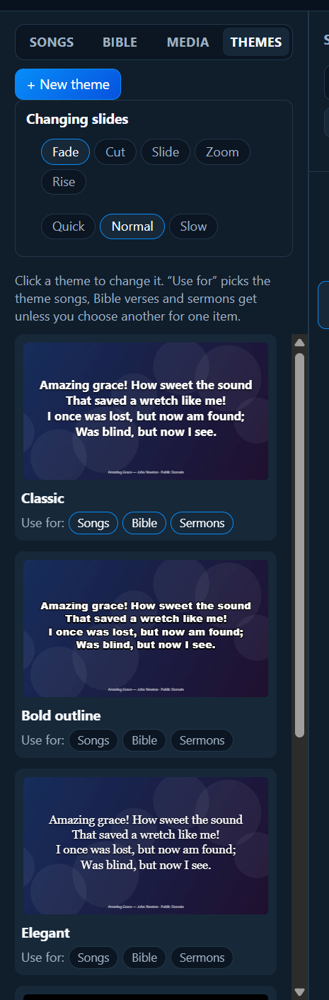
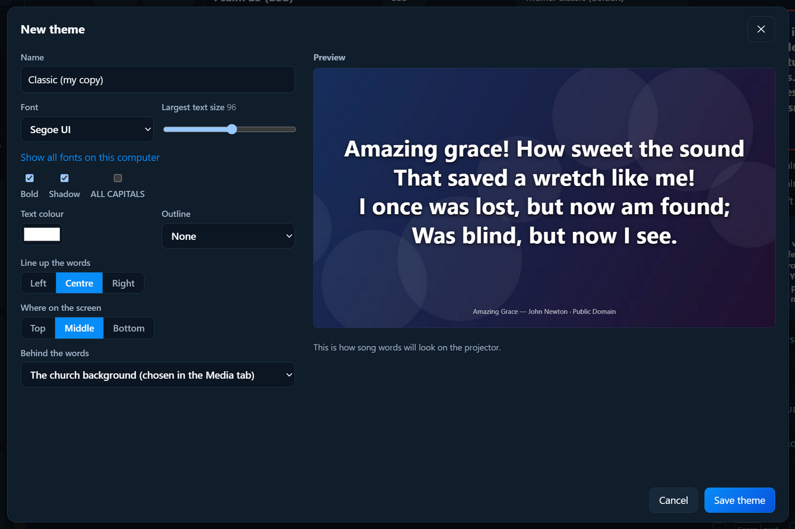

Media and slides
Themes: how the words look
A theme is how the words look: the font, size, colour and what’s behind them.

The built-in themes
- Classic: the starting theme.
- Bold outline: thick letters with an outline, easy to read over busy backgrounds.
- Elegant: a serif font.
- High contrast (easy to read): for people who find the screen hard to read.
- Words at the bottom: leaves the picture clear above.
Choosing a theme for songs, Bible verses and sermons
Under each theme, Use for: has Songs, Bible and Sermons. Click to make that theme the one they get. For example, songs in Classic and Bible verses in Elegant.
One item in a different theme
Select an item in the service. Above its slides, choose a Theme: from the list. Only that item changes.
Changing a theme, or making your own
Click a theme’s picture to change it. Built-in themes can’t be changed: clicking one makes your own copy to change. Or click + New theme.

- Name.
- Font, and Largest text size. Long verses get smaller by themselves to fit; this is how big short ones get. Show all fonts on this computer lists every font.
- Bold, Shadow, ALL CAPITALS.
- Text colour, Outline (None, Thin, Thick) and its colour.
- Line up the words (left, centre, right) and Where on the screen (top, middle, bottom).
- Behind the words: The church background (chosen in the Media tab), A picture or video, A plain colour, or Black.
The Preview shows how song words will look on the projector. Click Save theme. Delete theme removes your own theme; anything using it goes back to Classic.
How slides change
At the top of the Themes tab, Changing slides:
- Fade (the usual), Cut (instant), Slide, Zoom, Rise.
- Speed: Quick, Normal, Slow.
This is for every screen and every item.